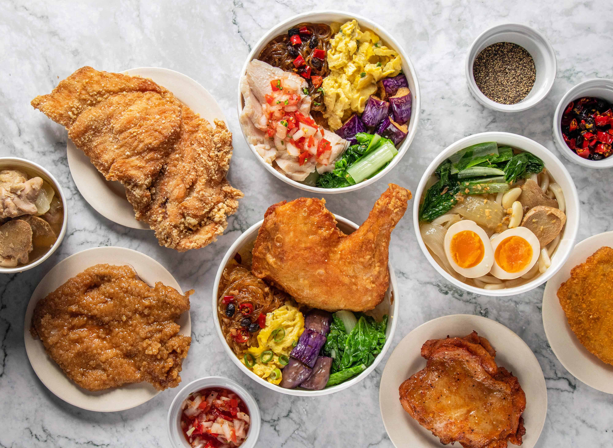
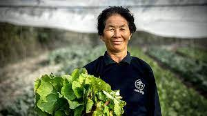

Grad Student at Purdue
Major in Agricultural Enginnering
email: lin1634@purdue.edu
@ShihYLin
Work Samples

- Restaurant Manager
- Trained staff to follow restaurant procedures and organized employee shift schedules

- Constraints of conversion to organic farming
- Conducted interviews with Thai local farmers. Researched and collected relevant data to assemble a plan that aimed to increase efficiency in farms in rural Thailand
- Dairy Industry in Taiwan
- Gathered data from US imported agricultural goods.
- Identified commercial opportunities of agricultural products from the US